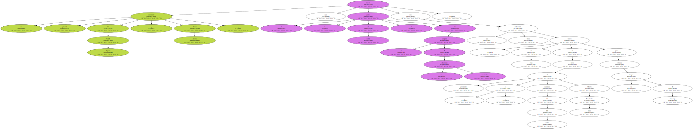
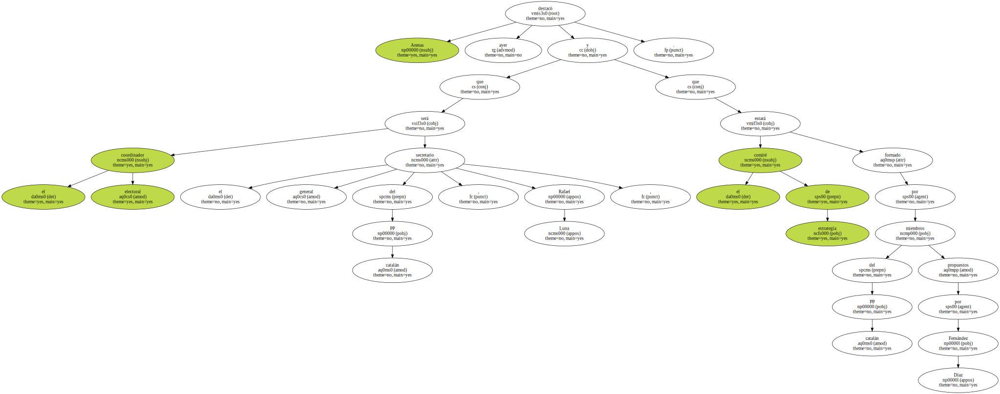
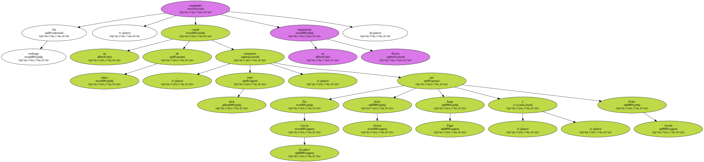
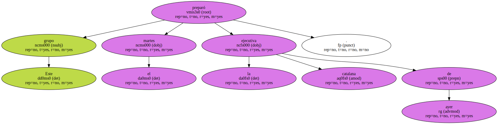
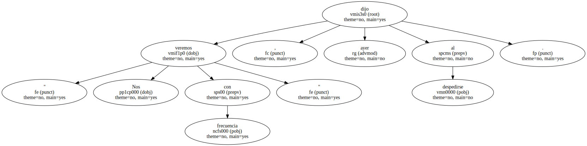

El secretario general del Partido Popular , Javier Arenas , marcó ayer el " punto de salida " de la campaña de las elecciones autonómicas con una clara instrucción : cierre de filas en torno al presidente y candidato del PP catalán , Alberto Fernández Díaz , para reforzar su imagen de liderazgo.
Arenas destacó ayer que el coordinador electoral será el secretario general del PP catalán , Rafael Luna , y que el comité de estrategia estará formado por miembros del PP catalán propuestos por Fernández Díaz.
Sin embargo , un comité de enlace compuesto , entre otros , por Pío García Escudero , Javier Arenas , Josep Piqué y Pedro Arriola mantendrá un seguimiento directo.
Este grupo preparó el martes la ejecutiva catalana de ayer.
Arenas anunció que , hasta las elecciones , su presencia será " semanal " en Catalunya.

" Nos veremos con frecuencia " , dijo ayer al despedirse.
